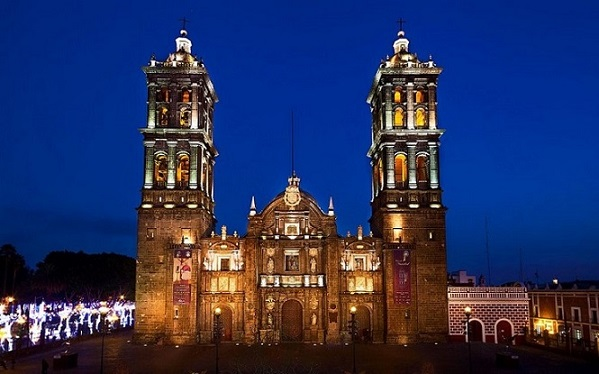

La Catedral de Puebla es el monumento más
representativo de esta ciudad. En los inicios de la
“Ciudad de los Ángeles “, no estaba contemplada la
construcción de una catedral, debido a que la sede de
la diócesis estaba en Tlaxcala. Fue hasta 1535 cuando
el entonces obispo, Fray Julián Garcés, decidió
cambiar la sede a esta ciudad, Iniciándose la
construcción de una primera catedral. Años después
se inició la construcción de una Catedral más digna de
Puebla, por lo que se le pidió el proyecto a uno de los
arquitectos más importantes de esos tiempos, el
arquitecto el español Francisco Becerra.
En 1640, cuando el obispo Juan de Palafox y Mendoza,
llegó a la ciudad, encontró que los trabajos de
construcción estaban detenidos, por lo que decidió
dar el impulso definitivo a los trabajos de construcción
que habían avanzado lentamente, al grado de que en
esos años ni siquiera los muros estaban terminados.
De esta forma el obispo Palafox consagró la Catedral
de Puebla con una misa el 18 de Abril de 1649,
faltando aún las fachadas y las torres.
La construcción de las famosas torres de esta Catedral
tardó casi dos siglos. La torre norte, iniciada a
principios del siglo XVII, se terminó de construir en
1678 y la torre sur se terminó 90 años más tarde, en
1768. Estas torres son las más altas de las catedrales
latinoamericanas, con más de 70 metros.
Su forma es una cruz latina con cinco naves. El altar
principal es octogonal, con otros cuatro orientados a
los puntos cardinales. El complejo consta de catorce
capillas en varios estilos con numerosas obras
artísticas. Todos motivos para visitarla en un viaje de
turismo religioso a México.
Su fachada es barroca tardía en transición al
neoclásico, con columnas dóricas y corintias. Sus
campanarios se encuentran a poco menos de 70
metros de altura, el más alto de México. Los asientos
en el coro están hechos de maderas finas, ónix y marfil
de diseño morisco. Los dos órganos fueron donados
por Carlos V. En la cripta debajo de la Catedral, se
pueden ver numerosas estatuas de santos y ángeles de
ónice.
Presiona para ver más información sobre como visitar la catedral actualmente por la pandemia
Presiona aquí para saber aún más sobre la catedral
Aquí hay un pequeño video sobre la catedral de puebla
La razón por la que elegí este monumento es porque esta catedral es la que tiene las torres mas
altas del continente, es una de las catedrales mas bellas del mundo por su arquitectura y fachada
renacentista, así como por dentro posee un conjunto artístico como pinturas, esculturas, orfebrería
y ebanistería de la época novohispana.
Nombre del participante: SAMUEL ASMIR LÓPEZ GARCÍA